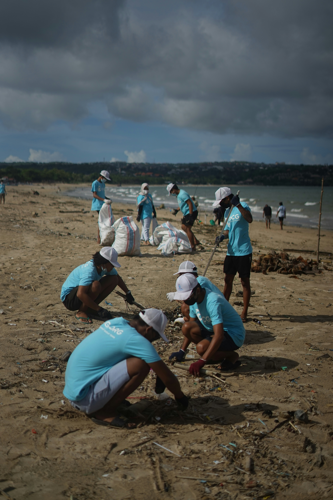
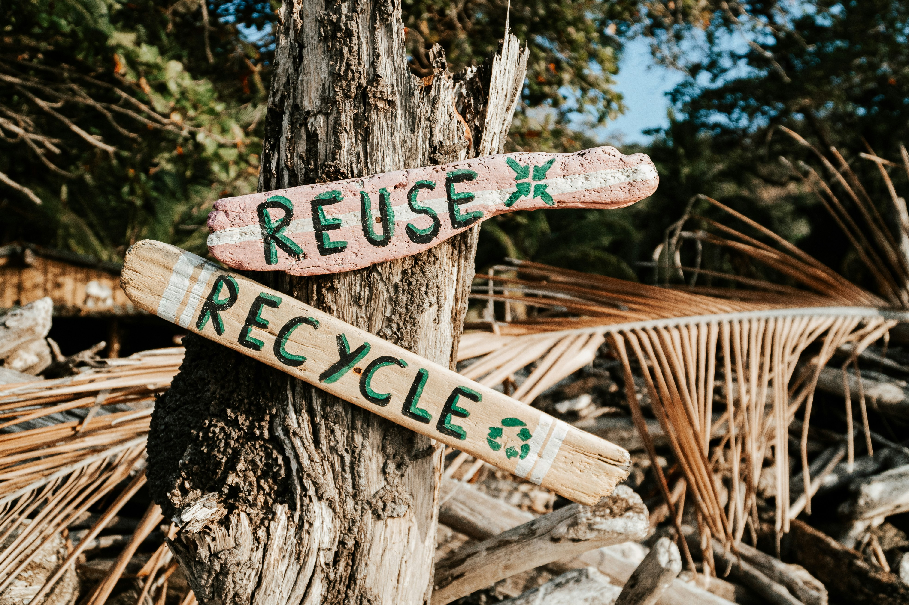

Commit2Act is a global digital platform designed
to empower individuals—especially youth—to take
meaningful action on environmental and social
issues. Developed by TakingITGlobal, the
platform gamifies sustainability by allowing
users to log their eco-friendly actions, track
their impact, and engage with a community
of change makers worldwide.


What We do
We raise awareness about ethical fashion, promote sustainable consumer behavior, and offer digital tools to help people track their choices.
Commit2Act fosters a sense of community by allowing users to join or create groups, participate in challenges, and compete on leaderboards. This social aspect motivates users to stay engaged and committed to their sustainability goals.